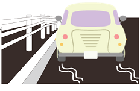
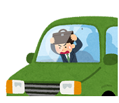
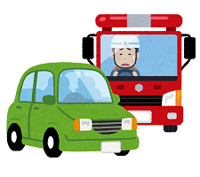
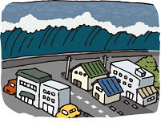

地震発生 - 自動車 -

緊急地震速報が鳴り出したら
 周囲の状況に注意しながら、ゆっくりと左に寄せて停車してください。 急ブレーキは厳禁です。 ハザードランプを付け、揺れに備えてください。 時間的に余裕があれば、巻き込まれ事故を避けるために、車外へ避難することも検討してください。身の安全を確保する
 慌てて車外へ出ると危険な場合があります。安全に避難できない場合は、車内で揺れが収まるのを待ってください。揺れが収まったら
車を降りる際は、落下物などに注意してください。 車を離れるときは、キーを付けたまま、ドアロックせず、車検証など貴重品を持って行くようにしてください。 ロックされてキーを抜かれたまま車が放置されると、緊急車両の妨げになる恐れがあります。 津波について
 海の近くや低い土地では、地震の後、津波の恐れがあるかもしれません。情報を収集し、必要であれば垂直(高い場所へ)避難してください。